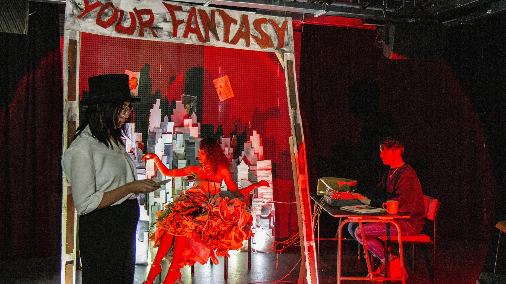
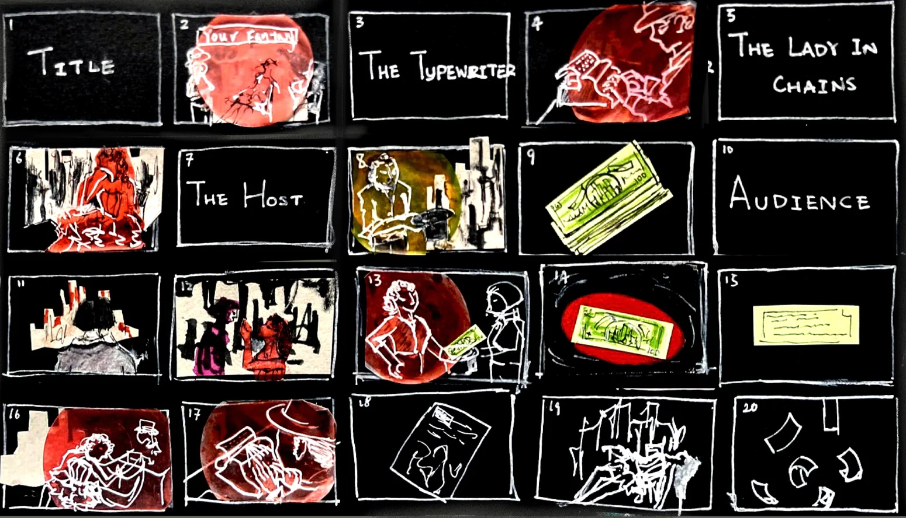
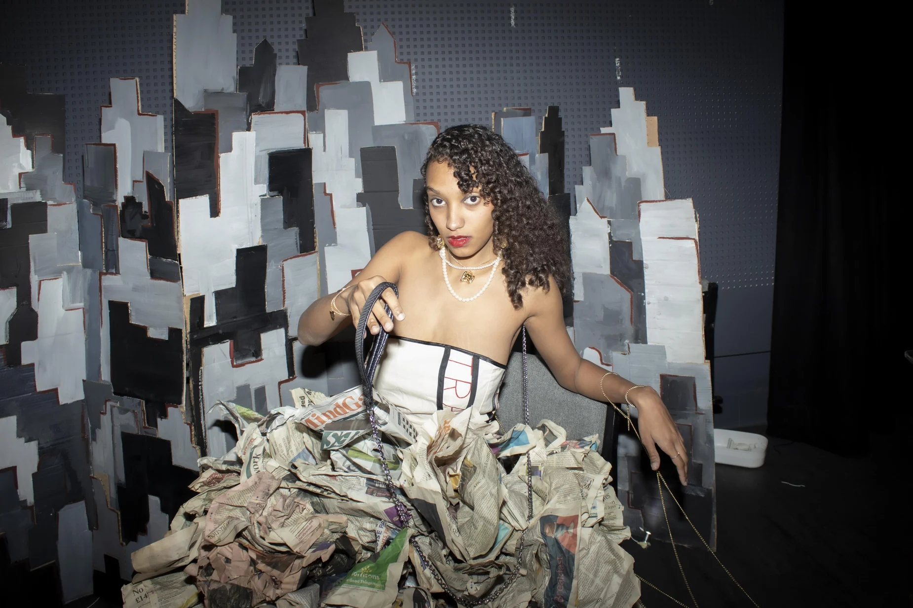

Your Fantasy
Devised Interactive Theatre

Your Fantasy is a low-budget, collaboratively devised theatre experiment that takes The Rise and Fall of the City of Mahagonny as its starting point. A shop window displays a performer as merchandise. The audience is offered a banknote carrying a sexist remark. Passing it to the attendant prompts the typist to turn the words into a poster displayed behind the performer.
We built the cityscape from cardboard and used newspaper and printed matter throughout the display. I designed the posters, drew the storyboard and filmed the trial. I was interested in how a remark found online changes when it is carried into a room, handed to someone and put on display.
- Role
- Poster Design, Storyboard & Filming
- Medium
- Live Performance, Audience Participation, Printed Matter, Film
The film
Making the window
The model city, newspaper dress and handwritten notes gave the shop window its visual language.




Credits
- Posters, storyboard and filming
- Yun Deng
- Cardboard background
- The group
- Signboard and banknotes
- Flora and Janne
- Costume
- Richard and Freya
- Performers
- Misseti, Janne, Richard and Giorgia
- Editing
- Misseti